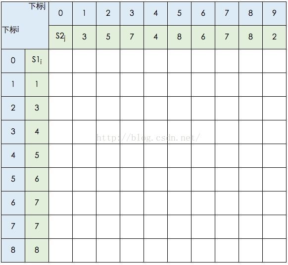
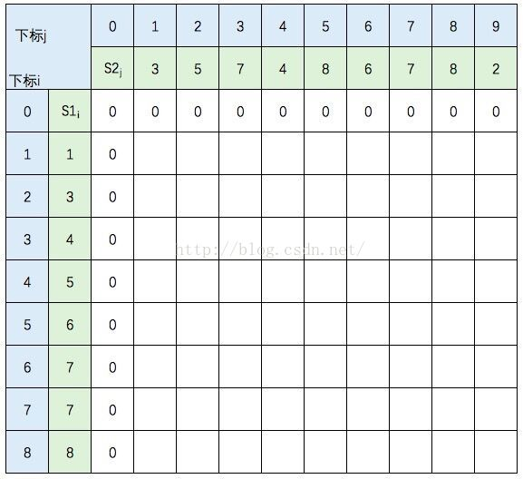
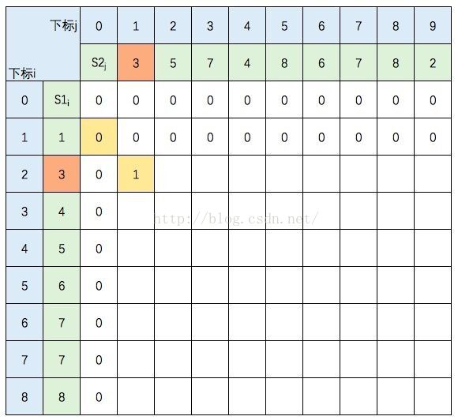
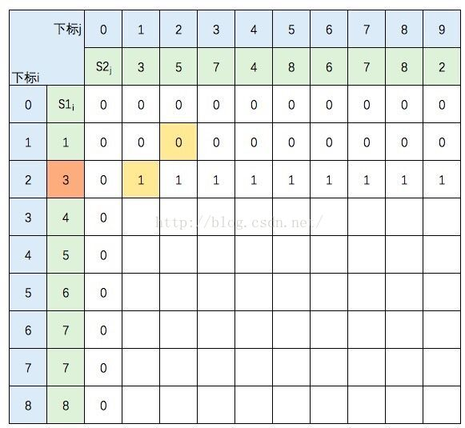
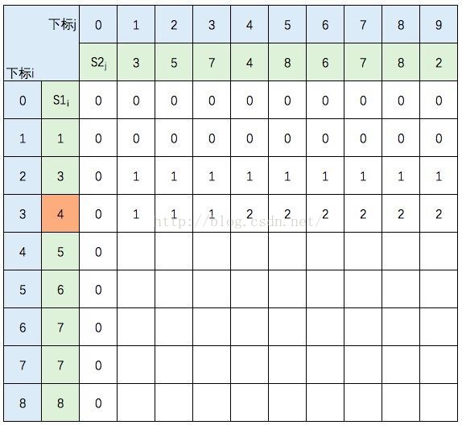
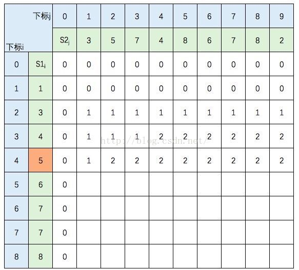
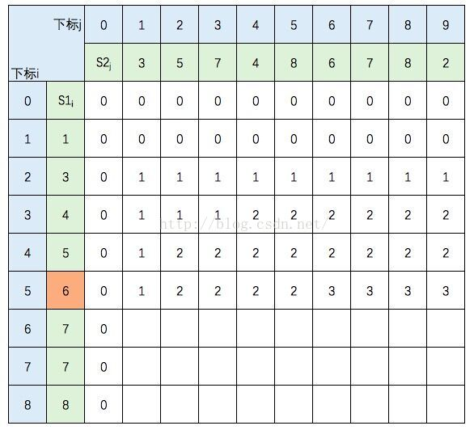

最长上升子序列（LIS）
给定一个长度为n的整数序列A[]，求它的一个子序列(子序列即在原序列任意位置删除0或多个元素后的序列)，满足如下条件：
- 该序列单调递增；
- 在所有满足条件1的序列中长度是最长的。
让我们举个例子：求 2 7 1 5 6 4 3 8 9 的最长上升子序列。我们定义d[i]来表示前i个数以A[i]结尾的最长上升子序列长度。
- d[1]=1 子序列为2；
- d[2]=d[1]+1=2 子序列为2 7
- d[3]=1 子序列为1
- d[4]=d[1]+1=2 子序列为2 5
- d[5]=d[4]+1=3 子序列为2 5 6
- d[6]=d[1]+1=2 子序列为2 4
- d[7]=d[1]+1=2 子序列为2 3
- d[8]=d[5]+1=4 子序列为2 5 6 8
- d[9]=d[8]+1=5 子序列为2 5 6 8 9
可以总结出递推公式为：
$$
d[i]=\max\{d[1],d[2],……,d[i-1]\} + 1
$$
代码如下：
1 |
|
最长公共子序列(LCS)问题
在两个字符串中，有些字符会一样，可以形成的子序列也有可能相等，因此，长度最长的相等子序列便是两者间的最长公共字序列，其长度可以使用动态规划来求。
以s1={1,3,4,5,6,7,7,8},s2={3,5,7,4,8,6,7,8,2}为例。
借用《算法导论》中的推导图：
创建 DP数组C[][];

图中的空白格子需要填上相应的数字（这个数字就是 c[i, j] 的定义，记录的LCS的长度值）。填的规则依据递归公式，简单来说：如果横竖 (i, j)对应的两个元素相等，该格子的值 = c[i-1,j-1] + 1。如果不等，取c[i-1,j] 和 c[i,j-1]的最大值。首先初始化该表：

然后，一行一行地从上往下填：

S1的元素3 与 S2的元素3 相等，所以 c[2,1] = c[1,0] + 1。继续填充：

S1的元素3 与 S2的元素5 不等，c[2,2] =max(c[1,2],c[2,1])，图中c[1,2] 和 c[2,1] 背景色为浅黄色。
继续填充：




中间几行填写规则不变，直接跳到最后一行：

至此，该表填完。根据性质，c[8,9] = S1 和 S2 的 LCS的长度，即为5。
得到公式
$$
c[i,j]=
\left \{
\begin {align}
&0; & i=0 or j = 0 \\
&c[i-1, j -1] + 1; & i, j \gt 0 and x_i == y_j \\
&max\{C[i, j-1], C[i-1, j]\}; & i,j \gt0,x_i \ne y_i
\end {align}
\right .
$$
代码
1 |
|